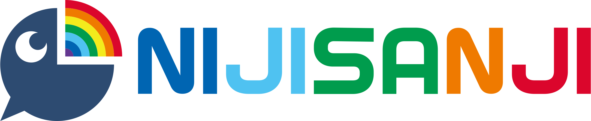

Agencias de vtubers: Nijisanji
A principios de 2018, Anycolor Inc. (entonces conocida como Ichikara) fundó la agencia VTuber Nijisanji. Nijisanji ayudó a popularizar el uso de modelos Live2D en lugar del enfoque anterior en modelos 3D, así como el cambio en la forma de crear contenido por parte de las VTubers, dejando atrás el hacer videovlogs para dar paso a los streams como contenido habitual.

Hololive
Cover Corporation, una empresa que originalmente estaba desarrollando software de realidad virtual y aumentada, cambió su enfoque a VTubers al establecer Hololive. De mayo a junio de 2018, la agencia Hololive, lanzaría el debut de su primer generación de VTubers: Yozora Mel, Shirakami Fubuki, Natsuiro Matsuri, Aki Rosenthal y Akai Haato serían la cabecilla de este nuevo proyecto, aunque la agencia ya había lanzado otras VTubers individuales, como es el caso de Tokino Sora (su primer VTuber) o Roboco. A raíz de esto Hololive se convertiría en una de las principales agencias de VTubers, sacando nuevas idols cada cierto tiempo.